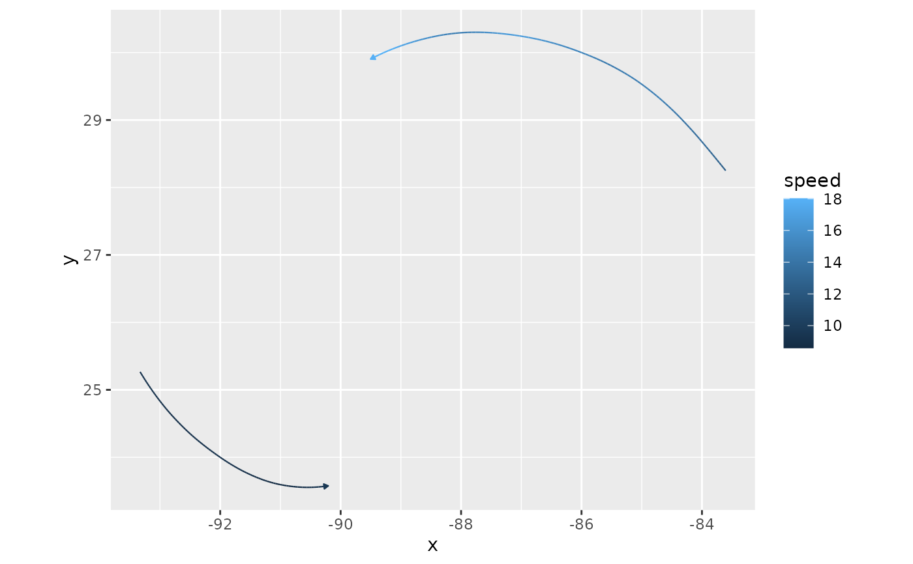

Trace particle trails through a wind field
wind_trails.RdTraces the paths of particles carried by a wind field, upwind and/or downwind from a set of
starting points. Each step, particles move in the direction of the local wind (interpolated
bilinearly), either by the distance the wind carries them in that time (hours), or by a
fixed distance (distance), giving trails that show direction only. Trails through a single
wind field are streamlines.
Arguments
- x
A
wind_field, created withwind_field().- seeds
Starting points: either a two-column matrix of longitude and latitude, or a single integer giving the number of points to generate with
generate_particles(), in which case further arguments to that function can be passed in....- hours
Transport time in hours spanned by each trail, assuming wind speeds in
xare in m/s. Particles move at the local wind speed, so trail length is proportional to speed. Supply exactly one ofhoursordistance.- distance
Length in km of each trail. Particles move at the same speed regardless of wind speed, so trails show only direction. Supply exactly one of
hoursordistance.- steps
Number of integration steps per trail. More steps give smoother and more accurate trails. Default 100.
- direction
Trace trails
"both"ways from each seed (the default; half ofhoursordistanceupwind and half downwind), only"downwind", or only"upwind".- wrap
Wrap particles that leave the field across its edges back in on the opposite side:
"neither"(the default),"horizontal"(e.g. for global fields),"vertical", or"both". Otherwise, trails end where they leave the field.- sf
Logical: return trails as an
sfobject of linestrings instead of a data frame? Requires the sf package. DefaultFALSE.- ...
Further arguments to
generate_particles(), used only ifseedsis an integer.
Value
A data frame with one row per particle position, ordered along each trail from upwind to downwind:
trail: trail id. Each particle's path is one trail, unless it wraps across the field's edge, which starts a new trail so that lines don't cross the map.particle: particle id, the row ofseedsit started from.step: integration step, negative upwind of the seed and positive downwind.hours(ifhourswas given): signed transport time from the seed. Orkm(ifdistancewas given): signed distance from the seed.x,y: longitude and latitude.speed: wind speed at the particle's position, in the units ofx.
With sf = TRUE, an sf object with one linestring per trail, with trail and particle
columns and the elapsed hours or km as the linestrings' M coordinate.
Examples
katrina <- windscape_example("wind_field")
seeds <- cbind(c(-92, -86), c(24, 30))
# where does air at these points come from and go to, over 12 hours?
tr <- wind_trails(katrina, seeds, hours = 12)
head(tr)
#> trail particle step hours x y speed
#> 1 1 1 -50 -6.00 -93.32998 25.26605 9.217235
#> 2 1 1 -49 -5.88 -93.30922 25.23541 9.198077
#> 3 1 1 -48 -5.76 -93.28821 25.20500 9.180220
#> 4 1 1 -47 -5.64 -93.26700 25.17477 9.164548
#> 5 1 1 -46 -5.52 -93.24555 25.14473 9.155587
#> 6 1 1 -45 -5.40 -93.22388 25.11486 9.146798
library(ggplot2)
ggplot(tr, aes(x, y)) +
geom_wind_path(aes(color = speed)) +
coord_quickmap()
